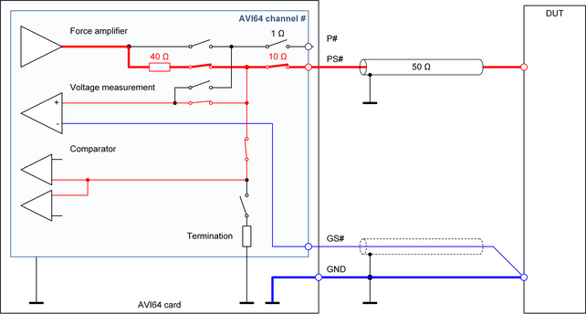
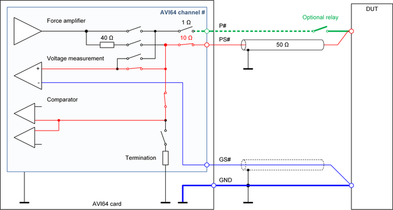

AVI64 Sense only connection
The "Sense only connection" is the standard connection scheme for the Digital I/O operating mode. It is the recommended connection scheme for high-speed tests with low capacitive load and for high impedance measurements.

Characteristics of the connection scheme
This connection scheme is intended to minimize the capacitive load on the DUT. It is the standard connection scheme for the Digital I/O operating mode and may be used as optional connection scheme for the PMU operating mode.
This connection scheme is not supported for the DPS operating mode of SmarTest 7.
Recommended applications
- High-speed digital tests with low capacitive load
- High-speed TMU measurements
- Tests using the high-speed AWG mode of the PMU
- Low current PMU measurements
- Operating mode crossover from the PMU operating mode to the Digital I/O operating mode and vice versa
- High impedance measurements: Measurement mode = "VM_HIZ" or "VM_HIZ_COH" for SmarTest 7 or Connect mode = highImpedance for SmarTest 8.
Limitations of the connection scheme
- The current capability is limited to 50 mA.
- The internal sense path contains about 10 Ω of uncompensated resistance.
- The voltage drop on the single PS# line is not compensated and therefore, the voltage accuracy in current driving applications is limited.
- The shared floating high-current unit cannot be connected.
- The shared high-resolution arbitrary waveform generator cannot be connected.
Layout recommendations
- The connection from PS to the DUT should be designed with controlled 50 Ω impedance in order to minimize reflections on the line.
- The pin GS and the GND plane or GND line should be connected together directly at the DUT to eliminate the voltage drop on the GND plane or GND line.
- We recommend shielding the GS line with the GND line or with a ground layer.
- For the combination of the software defined Sense only connection mode and the DUT board wiring schemes AVI64 Kelvin connection or AVI64 reverse Kelvin connection, we recommend inserting a relay for separating the DUT pin from the trace to the P# pogo pin. The relay should be placed close to the DUT socket. For more information, refer to the next section.
Combination of the Sense only connection and the Kelvin connection
The software defined sense only connection mode may be combined with the AVI64 Kelvin connection scheme or the AVI64 reverse Kelvin connection scheme if both the P# pogo pin and the PS# pogo pin are wired on the DUT board. This will add more leakage current and capacity to the DUT pin. For more information, refer to table "Interface characteristics" in AVI64 other specifications.
For this use case, we recommend therefore inserting an optional relay into the P# trace on the DUT board. This will minimize the leakage current and input capacity if the channel is to be connected in the Sense only connection mode. The optional relay is marked green in the following diagram. It separates the DUT pin from the trace to the P# pogo pin.

Functional changes
- Introduced in SmarTest 7.4.0 / 8.1.0